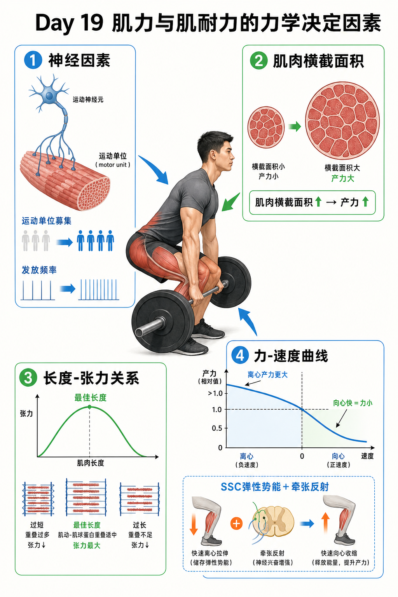

Day 19 · 肌力与肌耐力的力学决定因素
一句话总结
肌力像一台车的最大扭矩，肌耐力像这台车能稳定跑多久: 神经油门、肌肉横截面积、肌肉当下长度、收缩速度和疲劳管理共同决定输出。新手前几周力量涨很快，常常不是肌肉马上变大，而是神经系统更会“叫醒”肌肉。

核心要点
-
神经因素: 力量输出首先取决于大脑和脊髓能叫醒多少运动单位、叫得多快、叫得是否协调。
先抓结论: 新手力量先涨，常是神经驱动变好，不是肌肉横截面积立刻暴增。底层机制
字面意思
运动单位募集数量、发放频率和同步化决定同一时刻有多少肌纤维参与发力。
大白话
像开工厂。以前只开三条生产线，现在能开八条，还能让它们同时开机。
训练与考试
NSCA 常考“新手力量增长快于肌肥大”，答案优先找神经适应。
运动单位 = 一个 alpha 运动神经元和它支配的所有肌纤维。募集更多运动单位，等于更多肌纤维加入；发放频率更高，等于神经信号更密集，肌肉张力更容易叠加。
真实例子刚学深蹲的人，动作稳定后 1RM 上升很快，但腿围变化不明显。因为神经系统学会了更有效地调用股四头肌、臀大肌、内收肌和躯干稳定肌。
常见误解❌以为力量涨就一定是肌肉变大。✅其实早期常是神经适应，肌肥大通常需要更长时间和足够训练量。
-
肌肉横截面积: 肌肉越粗，理论上能并联更多肌纤维，最大产力潜力越大。
肌肉横截面积像发动机排量。排量大有更高上限，但还要会点火、会传力。
真实例子因素 怎么影响力量 训练提示 横截面积 更多肌纤维并联，最大张力潜力更高。 增肌训练提供长期力量底盘。 肌肉架构 羽状角、纤维排列影响有效拉力方向。 同样围度不代表完全相同力量。 技术传力 关节角度和杠杆力臂决定力量能否用到动作上。 大肌肉还要配合动作技术。 长期深蹲训练让股四头肌和臀大肌增大，最大力量上限提高。但如果深蹲路径不稳、膝髋节奏乱，新增肌肉不能完全转化为杠铃成绩。
训练含义想长期提升最大力量，需要有足够训练量、渐进超负荷、蛋白质和恢复。只练低次数技术，早期有效，但长期上限会受肌肉量限制。
常见误解❌以为肌肉越大就一定越强。✅更大通常潜力更高，但神经驱动、动作技术、肌腱刚度和杠杆结构也会影响表现。
-
长度-张力关系: 肌肉在“不太短也不太长”的最佳长度附近，肌动蛋白和肌球蛋白重叠最适合，产力最高。
长度-张力关系 = 肌肉长度会影响横桥数量。太挤或太拉开，都不利于发力。真实例子
字面意思
肌节长度改变时，粗肌丝和细肌丝可形成横桥的机会也改变。
大白话
像两排人拉手。站太近手挤在一起，站太远够不到，距离刚好最好发力。
为什么影响训练
不同关节角度会让同一块肌肉处在不同长度，所以同一动作不同位置难度不同。
二头弯举在中间角度通常更容易发力，完全伸直或完全收缩时发力感会变弱。深蹲底部不仅有杠杆问题，也有肌肉长度和被动张力参与。
训练含义训练计划要覆盖不同长度区域。增肌训练常重视全幅度和拉长位张力；力量专项也要练比赛动作最难角度。
常见误解❌以为越拉长越能发力。✅适度拉长有利，过长会减少横桥重叠；极端位置也可能受关节和被动组织限制。
-
力-速度曲线: 向心收缩速度越快，可产生力量越小；离心收缩例外，通常能承受更大力量。
力-速度曲线 = 肌肉收缩速度和产力能力互相牵制。快举轻，慢顶重，是同一条规律的表现。
底层机制收缩方式 速度变化 力量特点 向心 肌肉缩短，速度越快。 能产生的力越小。 等长 长度基本不变。 可产生较高稳定张力。 离心 肌肉被拉长仍在用力。 常能承受比向心更大的力。 向心很快时，横桥来不及大量结合和完成有效拉动，所以产力下降。离心时，横桥被外力拉开，加上被动弹性结构参与，因此能承受更大张力。
真实例子卧推能慢慢下放比推起更大的重量；深蹲下蹲阶段能控制更重负荷，但起立向心阶段容易卡住。
常见误解❌以为动作越快力量越大。✅爆发力需要快，但单纯“速度快”不等于最大力量大；重负荷向心速度必然变慢。
-
离心产力更大: 离心阶段能承受更高张力，但也更容易带来延迟性酸痛和组织微损伤。
离心像刹车系统。刹车能承受大力，但频繁急刹会更耗材料。真实例子
字面意思
肌肉一边被拉长，一边主动产生张力控制动作。
大白话
下楼比上楼不喘，但腿更容易酸，因为肌肉在反复“刹住身体”。
训练判断
离心训练可增肌和强化控制，但新手、恢复差或高量训练时要谨慎加量。
北欧腿弯举主要是腘绳肌离心控制，刺激强、酸痛也强。下放引体、慢速深蹲下降也会提高离心负荷。
训练含义离心适合用于动作控制、肌腱适应、增肌刺激和专项减速能力，但不应每次都堆到极限。恢复安排要比普通训练更保守。
常见误解❌以为酸痛越强训练越好。✅离心酸痛强只说明刺激和损伤高，不自动等于更快进步。
-
SSC: Stretch-Shortening Cycle 是牵张-缩短循环，先快速离心预拉伸，再立刻向心发力，利用弹性势能和牵张反射。
今日只提概念名和基本逻辑，完整三阶段留到 Day 76 增强式训练统一讲。真实例子
字面意思
Stretch = 拉长，Shortening = 缩短，Cycle = 连续循环。
大白话
像先压弹簧再立刻放开，压得快、接得快，反弹更有力。
为什么影响训练
跳跃、冲刺、变向都依赖快速离心到向心的转换，停太久弹性帮助会消失。
反向跳比静蹲跳通常跳得高，因为下蹲预拉伸储存弹性势能，并触发牵张反射增强后续向心输出。
训练含义增强式训练要重视接触时间、动作刚性和落地控制。疲劳过高时做 SSC 训练，反而会变成软塌塌的高冲击动作。
常见误解❌以为 SSC 就是跳得越多越好。✅SSC 关键是快速、弹性、可控，数量堆太多会降低质量并提高风险。
-
肌耐力: 肌耐力是肌肉在重复收缩中维持张力和动作质量的能力，不等于单次最大力量。
肌力看峰值，肌耐力看能否长时间保持可用输出。两者相关，但训练重点不同。
真实例子决定因素 像什么 训练表现 局部代谢能力 肌肉内能源补给和废物处理。 高次数不容易烧到崩。 毛细血管与线粒体 送氧和制造 ATP 的基础设施。 中低强度能撑更久。 技术经济性 同样动作少浪费力。 重复多次仍保持轨迹稳定。 神经抗疲劳 信号持续稳定。 后半组不明显掉速失控。 俯卧撑 1RM 不存在，但能不能做 30 次高质量俯卧撑，取决于胸肩三头肌耐力、核心稳定和动作效率。
训练含义肌耐力训练常用较轻到中等负荷、较高次数、短休息或循环安排。但如果动作质量塌掉，练到的可能是代偿耐受，不是目标肌耐力。
常见误解❌以为高次数一定只练耐力、不增肌。✅高次数接近力竭也能增肌，只是疲劳类型和训练感受不同。
-
训练判断: 力量和耐力训练要看目标、负荷、速度、次数、休息和失败形式，而不是只看动作名称。
同一个深蹲，可以练最大力量、增肌、肌耐力或爆发力。变量不同，适应不同。
真实例子目标 更重要变量 判断信号 最大力量 高负荷、低次数、充分休息、技术稳定。 速度慢但路径稳。 增肌 足够训练量、接近力竭、目标肌张力。 目标肌疲劳，动作不乱。 肌耐力 重复次数、短休息、局部抗疲劳。 后半组仍能保持质量。 爆发力 高速度、低疲劳、快速用力。 速度掉了就该停。 壶铃摆动如果速度快、组间休息足，更偏爆发髋伸；如果持续高次数到喘不过气，更偏代谢和肌耐力；如果腰开始代偿，就不再是好训练刺激。
训练含义写计划时先确定目标，再选变量。考试看到“力量、耐力、速度、疲劳”混在一起，要先判断题目问的是峰值输出、重复能力还是爆发速度。
常见误解❌以为某个动作天然属于某种目标。✅动作只是工具，训练变量才决定主要适应。
常见误区
❌很多人以为新手力量暴涨就是肌肉长很快。✅其实早期主要来自运动单位募集、发放频率和动作协调改善。
❌很多人以为离心越多越高级。✅离心产力大，也更容易酸痛和微损伤，需要控制总量和恢复。
❌很多人以为肌耐力训练就是随便轻重量做到累。✅肌耐力仍要保持目标肌张力和动作质量，否则只是在练代偿。
记忆口诀
神经先点火，肌肉定底盘；长度找中间，速度越快力越难；离心能刹重，耐力看续航。
翻转卡复习
实操关联
- 增肌: 需要足够训练量和接近力竭，让目标肌在多个长度范围持续承受张力。
- 最大力量: 重视神经输出、专项技术、高负荷低次数和充分休息。
- 爆发: 训练速度掉了就要停，爆发训练不是练到累，而是练快速高质量输出。
- 肌耐力: 用中低负荷、高次数、短休息训练续航，但动作质量不能崩。
- 康复: 离心训练可用于肌腱和控制能力，但剂量要小步增加，避免酸痛过强。
- 考试: 看到“力量先于肌肥大”选神经适应；看到“离心更大力”联想到力-速度曲线离心段。